# First, clean the environment:
rm(list = ls())
# Now load packages:
# install.packages("groundhog")
library("groundhog")
groundhog.library(pkg = c("data.table", "MASS", "crayon",
"tmvtnorm", "metafor",
"parallel", "foreach", "doSNOW",
"ggplot2", "patchwork", "scico"),
date = "2025-04-15")
# Also, we'll create a theme object for ggplots to make code more readable:
theme_SAFE <- theme_bw()+
theme(panel.border = element_blank(),
plot.title = element_text(hjust = 0.5),
plot.subtitle = element_text(hjust = 0.5),
panel.grid = element_blank(),
strip.background = element_blank())Introduction to SAFE
A step by step online tutorial
Introduction
If you have any questions, errors or bug reports, please feel free to contact Erick Lundgren (erick.lundgren@gmail.com).
To run the code interactively (instead of just reading this lovely tutorial), do the following:
- Clone the github repo: https://github.com/ejlundgren/SAFE.git
- Run the code chunks in the SAFE simulations tutorial.qmd while in the R project session or just follow along here on the web
Load libraries
The groundhog package ensures that the library versions you use are the same as ours. You will need R version 4.5.0. Be sure to install groundhog if it is not already installed with install.packages().
An introduction to SAFE bootstrapping
SAFE bootstrapping is an incredible, seemingly magical, technique to calculate bias-corrected point estimates and sampling variance for effect sizes for use in meta-analyses. SAFE bootstrapping is particularly useful for novel effect sizes for which sampling variance formulas may not be known. In some cases, it is also more unbiased than traditional plug-in formulas for variance and point estimates.
How does it work?
With SAFE bootstrapping, one draws a cloud (or vector) of hyperparameters of all variables used in an effect size formula. You then apply your effect size formula to this cloud. The variance of this transformed cloud is the sampling variance of your effect size!
You can then calculate a bias-transformed point estimate by taking the mean of this transformed cloud and subtracting it from 2 times the point estimate derived from the original variables.
Let’s demonstrate.
Imagine you’re conducting a meta-analysis of animal responses to a stressor. Many studies are reporting data as mean ‘latency time’ (e.g., time until an animal runs). However, you want to create an effect size of ‘speed’ from latency time. This is simple: take the inverse of latency (1/latency). Here let’s start with a single mean latency time, and associated standard deviation and sample size, and convert it to our new ‘speed’ effect size.
# The type of data summaries you might extract for a meta-analysis:
mean_latency <- 15
n <- 25
sd <- 4.6
# New effect size:
1/mean_latency[1] 0.06666667The effect size is trivial to calculate. But what is the sampling variance of this effect size, given that each of these measurements was associated with measurement sample size and standard deviation?
You could use calculus to derive a first-order sampling variance formula. Or you could use SAFE.
Step 1: Draw hyperparameters.
If the word ‘hyperparameter’ is scary, what we mean is a distribution associated with the variables in our effect size formula, in this case mean latency.
This is different than drawing from a population based on mean and standard deviation, which will have a broad distribution, reflecting the underlying population. Instead, we’re interested in drawing a distribution of the means—the hyperparameter of our effect size of interest. To do this, we draw from a normal distribution with standard error of the mean to describe dispersion.
To convert our ‘latency’ time to our ‘speed’ effect size with SAFE, let’s draw 1,000,000 samples of the mean latency hyperparameter from a normal distribution, with standard error as our sd. To avoid using lapply or loops, we’ll just do this on a single latency time and associated standard deviation and sample size. Note that we will do this for just one of our speed effect sizes (i.e., 1 mean, sd, and n).
# Set seed for reproducibility
set.seed(2025)
# Define the variables
x <- 15 # The mean latency time
sd <- 1.6 # standard deviation of latency time
n <- 25 # sample size, e.g., number of animals in the experiment
# Simulate a vector of hyperparameters (or cloud)
cloud <- rnorm(1e6, # number of samples
mean = x, # mean latency time
sd = sd / sqrt(n)) # standard error
# Let's have a look at the hyperparameter cloud
head(cloud)[1] 15.19864 15.01141 15.24741 15.40720 15.11871 14.94789hist(cloud)Step 2: Transform hyperparameters to target effect size
Now, let’s transform this cloud of hyperparameters to ‘speed’ with our ‘plug-in’ or definition formula 1/x. Note that when we write ‘plug-in’, we mean using a formula to calculate effect sizes or sampling variance.
These transformed values are centered on our original effect size, which we’ll overlay in red
# Transform the cloud to our effect size
cloud_trans <- 1/cloud
# Calculate the 'plug-in' effect size from the definition formula
x <- 15
plugin_effect_size <- 1/x
plugin_effect_size[1] 0.06666667# Compare plug-in effect size to transformed cloud of hyperparameters:
ggplot()+
geom_density(aes(x = cloud_trans), fill = "grey80")+
geom_vline(xintercept = plugin_effect_size, color = "red")+
theme_SAFE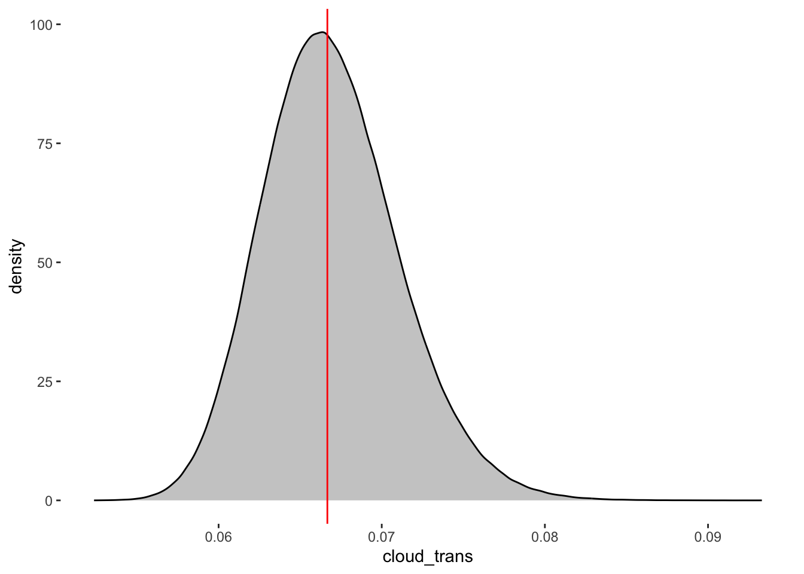
Step 3: Calculate sampling variance
To calculate sampling variance, we’ll simply calculate the variance of this transformed hyperparameter cloud.
safe_vi <- var(cloud_trans)Voilà! Sampling variance for a novel effect size. Pretty magical right?
We can compare this to sampling variance calculated using the Delta method on our 1/x effect size:
# Delta method sampling variance:
(sd^2 / n) * (-1 * x ^ -2)^2[1] 2.022716e-06# SAFE method:
safe_vi[1] 2.026101e-06We’ll compare these results below ((compare-results?)) to see whether SAFE provides as good of an estimate as this ‘plug-in’ estimate of sampling variance.
Step 4: Calculate the bias-corrected effect size
It may seem that we could just take the mean of this transformed cloud of hyperparameters to obtain an unbiased estimate of our effect size. However, due to Jensen’s inequality, we cannot. Jensen’s inequality states that applying any function (such as 1/x) to the mean of a distribution does not equal taking the mean of that same function applied to the distribution.
\[ f(\bar{x}) \neq \bar{f(x)} \tag{1}\]
We can demonstrate in R as follows. Here we’ll compare the transformed hyperparameter cloud (cloud_trans) to our plug-in estimate (1/x) and to the mean of our hyperparameter cloud (mean(cloud_trans)):
Can people double check that I’m thinking about this correctly?
ggplot()+
geom_density(aes(x = cloud_trans), fill = "grey80")+
geom_vline(xintercept = plugin_effect_size, color = "green")+
geom_vline(xintercept = mean(cloud_trans), color = "blue")+
theme_SAFE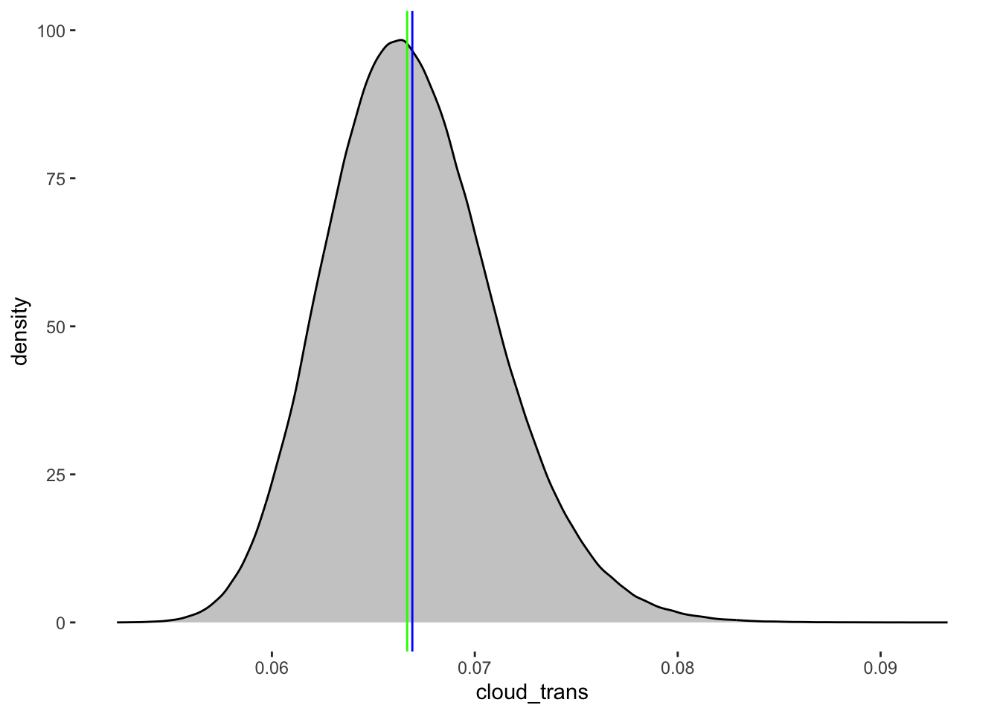
As you can see, the mean of transformed parameter cloud (blue vertical line) is slightly higher than our plug-in effect size (green line) because the transformed cloud’s distribution is somewhat skewed. The difference between these two estimates is the bias that we need to correct for to arrive at a bias-corrected point estimate.
We must therefore calculate an estimate of this bias and use this to correct our estimate. Bias measures how different the bootstrapped estimate is from the ‘true value’ and is calculated with the following formula:
\[ \widehat{\text{bias}} = \bar{\theta}^* - \hat{\theta}_{\text{truth}} \tag{2}\]
Where, \(\bar{\theta}^*\) is the average of the bootstrapped estimates and \(\hat{\theta}_{\text{truth}}\) is the true value. However, we do not know what the ‘true’ value is, given that our mean is a sample mean and the underlying population mean is unknowable. We thus use the plug-in estimate as surrogate for ‘truth’.
\[ \widehat{\text{bias}} = \bar{\theta}^* - \hat{\theta}_{\text{plugin}} \]
This estimate of bias captures the difference between the mean of our transformed cloud of hyperparameters and the plug-in estimate, which we treat as ‘truth’ (also known as the ‘estimand’, which we will explain in more detail below).
We now use this estimate of bias to correct our plug-in estimate. Note that this is very confusing because we are treating the plug-in as both ‘truth’ and as an estimate that needs to be corrected.
If the bootstrapped estimate is larger than the plug-in estimate, then the plug-in estimate is biased low, and we need to push it up. If the bootstrapped estimate is smaller than the plug-in estimate, then the plug-in estimate is biased high, and we need to push it down.
Bias corrected estimates just subtract this bias to correct the point estimate. In other words, the adjustment needed depends on the magnitude of difference and sign of the bias. We can substitute the bias into the following formula for bias-corrected estimate:
\[ \hat{\theta}_{\text{bc}} = \hat{\theta}_{\text{plugin}} - \widehat{\text{bias}} = \hat{\theta}_{\text{plugin}} - \big(\bar{\theta}^* - \hat{\theta}_{\text{plugin}}\big) \tag{3}\]
Rearranging this gives us:
\[ \hat{\theta}_{\text{bc}} = 2 \hat{\theta}_{\text{plugin}} - \bar{\theta}^* \]
You will notice that this is the same equation we use in the code chunk below.
safe_yi <- (2 * plugin_effect_size) - mean(cloud_trans)
safe_yi[1] 0.0666357We can now compare our plug-in effect size to our bias-corrected SAFE effect size:
plugin_effect_size[1] 0.06666667So similar! And potentially less biased. Let’s find out using Monte Carlo simulations where we compare the bias of estimates from SAFE to plug-in estimates. We’ll also demonstrate that the SAFE bias correction works by looking at the bias of the uncorrected mean of our SAFE bootstraps estimates. Note, that after these simulations we provide a guide ((custom-effect-sizes?)) on how to use SAFE for custom effect sizes for which there may be no documented variance formula.
How good is SAFE?
We simulated the bias of SAFE calculations versus normal plug-in calculations for a variety of common, and less common, effect sizes. We did this across a range of input variables, particularly sample size and the number of SAFE bootstraps.
In these simulations, we created simulated datasets based on true values for each scenario. These true values are the population means, of which each sample mean is drawn from based on the scenario sample size. We then calculated effect sizes and sampling variances (both with plug-in formulas and SAFE) for the true values and based on the simulated datasets. We did this 1e5 times for each scenario.
In these Monte Carlo simulations, we were interested in bias, or the difference between the ‘true’ estimands (i.e., sampling variance and effect sizes) and the estimates (of sampling variance and effect sizes) produced from various methods and applied to the simulated data. We’ll explain the difference between estimands, estimators, and estimates below.
To illustrate, we’ll do a simulation for our ‘speed’ effect size 1/x. Note that we’ll do this for only 1 effect size (e.g., mean, SD combination) but across several sample sizes, to illustrate how bias decreases with sample size.
To speed things up we will do this in parallel. The function prepare_cluster() below can help set things up, including a progress bar so you don’t lose your mind wondering what’s going on in there.
set.seed(2025)
# Prepare cluster:
prepare_cluster <- function(n){
require("parallel")
require("foreach")
require("doSNOW")
nCores <- parallel::detectCores() -1
cl <- makeCluster(nCores)
registerDoSNOW(cl)
# Progress bar
pb <- txtProgressBar(max = n, style = 3)
progress <- function(n) setTxtProgressBar(pb, n)
opts <- list(progress = progress)
ret <- list(opts, pb, cl)
names(ret) <- c("options", "progress", "cluster")
return(ret)
cat("Pass 'x$options' to .opts in foreach;
'x$progress' to setTxtProgressBar(x$progress, i);
'x$cluster' to stopCluster(x$cluster) after foreach")
}Now we will run 10,000 simulations to showcase how this method works. The actual simulations had a length of 1e5 and are loaded and visualized below ((Monte-Carlo-results?)).
To begin, let’s imagine that a population has a true population mean latency time of 15 and a true standard deviation of 4.6. This population was sampled with varying degrees of effort, and thus sample sizes of 5, 15, and 100. These sample sizes will be used to create our simulated dataset.
guide <- data.table(true_mean = 10.5,
true_sd = 1.2,
sample_n = c(5, 15, 100),
scenario_id = paste0("scenario_", seq(1:3)))
guide true_mean true_sd sample_n scenario_id
<num> <num> <num> <char>
1: 10.5 1.2 5 scenario_1
2: 10.5 1.2 15 scenario_2
3: 10.5 1.2 100 scenario_3Monte Carlo simulation
We’ll run this Monte Carlo simulation in a foreach loop for 1e5 iterations. Note that since we’re doing this simulation for 3 different sample sizes, we need to do the simulation in an lapply inside our foreach loop. In this lapply, we’ll create simulated datasets sampled 5, 15, and 100 based on the ‘true’ mean and standard deviation. Given that sample sizes vary between our scenarios, each simulated dataset will be of a different length (and more different than our ‘true’ mean).
This data is then summarized to a sample mean and standard deviation from which we will calculate effect sizes and sampling variances for the simulated values with both plug-in and SAFE methods. This is approximating reality, wherein researchers are estimating a ‘true’ value in the world by taking samples of it, and the job of the meta-analyst is to compare their results while accounting for differences in sampling variance.
Note that if you’re running this code interactively, this can take a minute. Feel free to load the already run dummy dataset in the next code block.
monte_carlo_N <- 1e5
clust_out <- prepare_cluster(n = monte_carlo_N)
res <- foreach(i = 1:monte_carlo_N,
.options.snow = clust_out$options,
.errorhandling = "pass",
.packages = c("data.table", "MASS", "tmvtnorm")) %dopar% {
# This lapply will cycle through each scenario:
results <- lapply(1:nrow(guide), function(x){
# Draw sample data with standard deviation and sample_n:
sample <- rnorm(guide$sample_n[x], # number of samples
mean = guide$true_mean[x], # true mean latency time
sd = guide$true_sd[x]) # standard deviation
# Calculate sample mean/sd
sim_dat <- data.table(sim_mean = mean(sample),
sim_sd = sd(sample),
sample_n = length(sample),
true_mean = guide$true_mean[x],
true_sd = guide$true_sd[x],
scenario_id = guide$scenario_id[x])
# Now calculate plug-in effect sizes and sampling variances for each simulation sample:
sim_dat[, yi_plugin := 1/sim_mean]
sim_dat[, vi_plugin := (sim_sd^2 / sample_n) * (-1 * sim_mean ^ -2)^2]
# Now, calculate SAFE effect sizes and sampling variances.
# First, create cloud of hyperparameters:
cloud <- rnorm(1e5,
mean = sim_dat$sim_mean,
sd = sim_dat$sim_sd / sqrt(sim_dat$sample_n))
# Transform cloud:
cloud_trans <- 1/cloud
# Calculate SAFE sample variance and add to our 'sim_dat'
sim_dat[, vi_safe := var(cloud_trans)]
# Calculate bias corrected SAFE point estimate and add to our 'sim_dat'
sim_dat[, yi_safe := (2 * yi_plugin) - mean(cloud_trans)]
# And, for demonstration purposes, let's also record the uncorrected mean of our 'cloud_trans'
sim_dat[, mean_safe := mean(cloud_trans)]
# Return the results:
return(sim_dat)
}) |> rbindlist()
setTxtProgressBar(clust_out$progress, i)
return(results)
}
stopCluster(clust_out$cluster)
res <- rbindlist(res)
saveRDS(res, "builds/speed_simulation.Rds")Or just load the simulation here:
sim_mean sim_sd sample_n true_mean true_sd scenario_id yi_plugin
<num> <num> <int> <num> <num> <char> <num>
1: 10.63310 0.7769656 5 10.5 1.2 scenario_1 0.09404599
2: 10.35097 1.0276780 15 10.5 1.2 scenario_2 0.09660931
3: 10.37908 1.1564332 100 10.5 1.2 scenario_3 0.09634767
vi_plugin vi_safe yi_safe mean_safe
<num> <num> <num> <num>
1: 9.444841e-06 9.520191e-06 0.09394851 0.09414347
2: 6.133364e-06 6.216933e-06 0.09654513 0.09667349
3: 1.152407e-06 1.160184e-06 0.09633351 0.09636182Now, let’s add the ‘true’ effect size, based on the underlying population mean and SD to this dataset:
res[, true_yi := 1/true_mean]Calculate bias
To interpret the simulation results, it is essential to understand the difference between estimands, estimators, and estimates.
Estimands are the ‘true’ values.
Estimators are the methods used to estimate the estimand. What a tongue twister! In our case, the estimators are the 1st order effect size (e.g., definition formula), the 2nd order effect size that has been adjusted (usually using the delta method, except for Hedges’ g) to reduce bias, and the SAFE method.
Estimates are the estimates of the estimands produced by the estimators 🤠
Effect size (point estimate) bias
In the case of our effect sizes, there are two estimands that we’re interested in estimating: the ‘true’ effect size (based on the definition formula of the effect size type) and sampling variance. To calculate the bias of our various estimators in estimating effect sizes, we calculate the mean of the estimates from each simulated dataset and subtract the estimand value (the true effect size off the ‘true’ values).
Here we will calculate the bias of 3 estimators: the plug-in (yi_plugin), the bias-corrected SAFE estimate (yi_safe), and the uncorrected SAFE mean (mean_safe):
bias <- function(estimates, estimand){
return(mean(estimates) - unique(estimand))
}
point.bias <- res[, .(plugin_bias = bias(yi_plugin, true_yi),
bias_corrected_safe_bias = bias(yi_safe, true_yi),
uncorrected_safe_bias = bias(mean_safe, true_yi)),
by = .(scenario_id, sample_n)] |> unique()
head(point.bias) scenario_id sample_n plugin_bias bias_corrected_safe_bias
<char> <int> <num> <num>
1: scenario_1 5 2.480624e-04 -7.460059e-06
2: scenario_2 15 8.296546e-05 -6.680857e-07
3: scenario_3 100 9.183856e-06 -3.246088e-06
uncorrected_safe_bias
<num>
1: 0.0005035848
2: 0.0001665990
3: 0.0000216138# Melt this to make it plottable:
point.bias.long <- melt(point.bias,
id.vars = c("scenario_id", "sample_n"),
value.name = "bias",
variable.name = "estimator")
head(point.bias.long) scenario_id sample_n estimator bias
<char> <int> <fctr> <num>
1: scenario_1 5 plugin_bias 2.480624e-04
2: scenario_2 15 plugin_bias 8.296546e-05
3: scenario_3 100 plugin_bias 9.183856e-06
4: scenario_1 5 bias_corrected_safe_bias -7.460059e-06
5: scenario_2 15 bias_corrected_safe_bias -6.680857e-07
6: scenario_3 100 bias_corrected_safe_bias -3.246088e-06# Sort by sample size
setorder(point.bias.long, sample_n)
ggplot(data = point.bias.long,
aes(x = sample_n, y = bias, color = estimator))+
geom_hline(yintercept = 0)+
geom_path(linewidth = 1)+
geom_point(size = 2)+
xlab("Sample size")+
ylab("Point estimate bias")+
coord_cartesian(ylim = c(-0.001, 0.001))+
scale_color_manual("Estimator",
labels = c("plugin_bias" = "Plug-in bias",
"bias_corrected_safe_bias" = "SAFE\n(bias-corrected)",
"uncorrected_safe_bias" = "mean SAFE\n(uncorrected)"),
values = c("plugin_bias" = "#A8DADC",
"bias_corrected_safe_bias" = "#E63946",
"uncorrected_safe_bias" = "#1D3557"))+
theme_bw()+
theme(panel.border = element_blank(),
panel.grid = element_blank(),
legend.position = "bottom")
Wow! It looks like the bias-corrected SAFE estimate is the least biased estimator of our true effect size.
Sampling variance bias
Now, let’s calculate the bias of our sampling variance estimates. Interestingly, there is no way to know the ‘true’ estimand for sampling variance because sampling variance itself is a product of sampling (e.g., there is no true value). To estimate bias for our sampling variance estimates, we actually calculate the variance in point estimates for each estimator and use each of these as the estimand. With 2 estimators and thus 2 estimands, we’ll thus end up with 4 calculations of bias.
To understand how well our approximation is performing for sampling variance, we typically calculate relative bias by calculating bias as above but then dividing by the estimand and multiplying by 100.
*THESE RESULTS ARE NOW WAYYY OFF COMPARED TO THE FULL SIMULATIONS. THERE ARE SOME CRAZY HIGH VALUES in SAFE_VI THAT ARE CAUSING IT)
# First, calculate variance in point estimates as our 'estimand' by scenario_id
res[, var_estimand_plugin := var(yi_plugin),
by = .(scenario_id, sample_n)]
res[, var_estimand_SAFE := var(yi_safe),
by = .(scenario_id, sample_n)]
# To make this easier to read, we'll encapsulate the relative bias in a function:
relative_bias <- function(estimates,
estimand){
((mean(estimates) - estimand ) / estimand) * 100
}
# Now summarize by calculating relative bias per scenario ID and sample size
var.bias <- res[, .(SAFE_estimate.plugin_estimand = relative_bias(vi_safe, unique(var_estimand_plugin)),
SAFE_estimate.SAFE_estimand = relative_bias(vi_safe, unique(var_estimand_SAFE)),
plugin_estimate.plugin_estimand = relative_bias(vi_plugin, unique(var_estimand_plugin)),
plugin_estimate.SAFE_estimand = relative_bias(vi_plugin, unique(var_estimand_SAFE))),
by = .(scenario_id, sample_n)] |> unique()
# Now melt:
var.bias.long <- melt(var.bias,
id.vars = c("scenario_id", "sample_n"))
head(var.bias.long) scenario_id sample_n variable value
<char> <int> <fctr> <num>
1: scenario_1 5 SAFE_estimate.plugin_estimand 3.2790292
2: scenario_2 15 SAFE_estimate.plugin_estimand 1.5818108
3: scenario_3 100 SAFE_estimate.plugin_estimand -0.3812994
4: scenario_1 5 SAFE_estimate.SAFE_estimand 4.8263985
5: scenario_2 15 SAFE_estimate.SAFE_estimand 2.0902205
6: scenario_3 100 SAFE_estimate.SAFE_estimand -0.3062235# Split the 'variable' into estimator and estimand for plotting
var.bias.long[, c("Estimator", "Estimand") := tstrsplit(variable, ".", fixed = TRUE)]
# Sort the dataset by sample size
setorder(var.bias.long, sample_n)
# Plot
ggplot(data = var.bias.long,
aes(x = sample_n, y = value, color = Estimator))+
geom_hline(yintercept = 0)+
geom_path(linewidth = 1)+
geom_point(size = 2)+
xlab("Sample size")+
ylab("Relative bias (%) in variance estimates")+
scale_color_manual("Estimator",
labels = c("plugin_estimate" = "Plug-in\n(definition formula)",
"SAFE_estimate" = "SAFE bootstrapping"),
values = c("plugin_estimate" = "#A8DADC",
"SAFE_estimate" = "#E63946"))+
facet_wrap(~Estimand,
ncol = 1,
labeller = as_labeller(c("plugin_estimand" = "Plug-in estimand\n(definition formula)",
"SAFE_estimand" = "SAFE estimand")))+
theme_bw()+
theme(panel.border = element_blank(),
panel.grid = element_blank(),
strip.background = element_blank(),
legend.position = "bottom")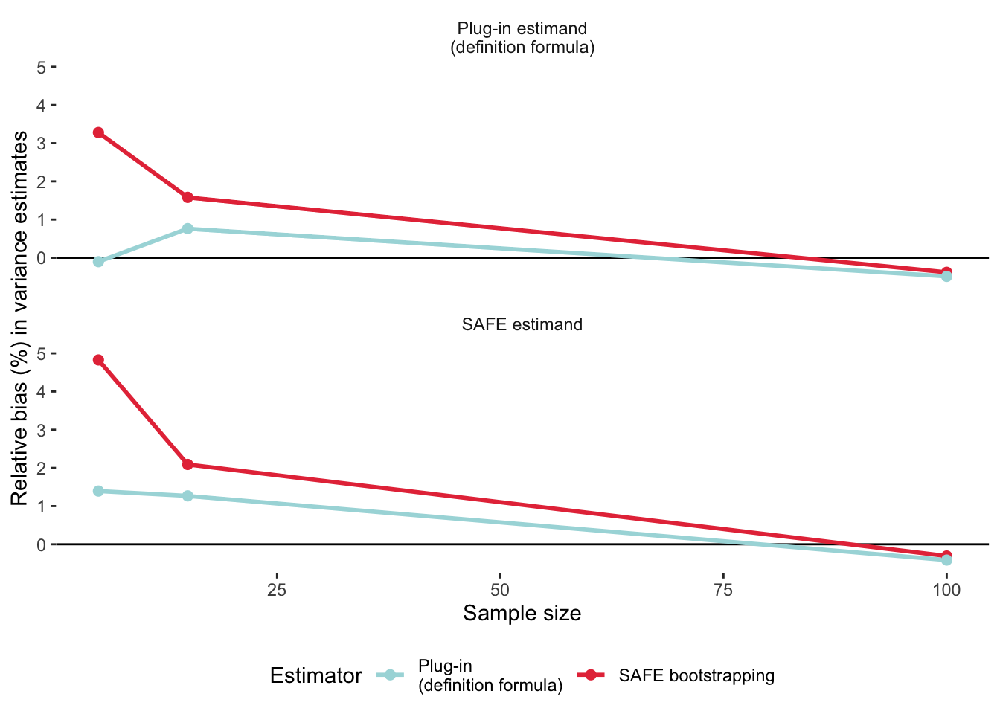
We see here that SAFE (red) is slightly more biased than the plug-in variance formula we derived. However, the difference is marginal and more conservative, given that higher sampling variance means lower weights in the meta-analytic model.
We’ve conducted full Monte Carlo simulations for a variety of effect sizes (Monte-Carlo-results?). These are below ((Monte-Carlo-results?)). However, first, we’ll demonstrate how a meta-analyst might use SAFE to calculate point estimates and sampling variances for custom effect sizes.
Creating custom effect sizes
The greatest draw of the SAFE method is its applicability to a variety of custom effect sizes that researchers may want to use for particular meta-analyses. After all, in order to conduct a meta-analysis, one requires a measure of sampling variance to use as a model weight. Deriving this sampling variance is non-trivial as it requires using the Delta method and is difficult to confirm or validate. Let’s try using SAFE for the temperature coefficient Q10.
The Q10 Temperature Coefficient
Q10 is a widely used measure of temperature sensitivity of chemical reactions or biological processes. Q10 compares the rate of a process between 2 temperature treatment groups. The formula for Q10 is:
\[ Q_{\text10} = (R_{\text2} / R_{\text{1}})^{10/(T_{\text2}-T_{\text1})} \tag{4}\]
Where R is the rate of some biological or chemical process for treatment groups 1 and 2 and T is the temperatures of groups 1 and 2.
If one wanted to conduct a meta-analysis on studies reporting Q10 data, along with sample size and standard deviation for each mean R, how would you calculate sampling variance? One could derive sampling variance using the delta method but this is outside many people’s mathematical comfort zone and it’s not clear how one would evaluate whether the derived sampling variance is accurate or not.
For example, Havird et al. (2020), conducted an influential meta-analysis using Q10 on passive versus active thermal acclimation among a diversity of aquatic and terrestrial taxa. At the time there was no sampling variance for Q10 effect sizes and so the authors derived it using the Delta method. However, SAFE could have saved the day!
Let’s see if we can use SAFE to calculate sampling variance for Q10 type data. We will use a fake dataset, reflecting what a meta-analyst might extract from the literature.
dat <- fread("data/Q10_fake_data.csv")
dat Reference_ID Obs_ID R1_mean R1_SD R1_N R2_mean R2_SD R2_N T1 T2
<int> <int> <int> <num> <int> <int> <num> <int> <int> <int>
1: 1 1 13 2.1 15 18 3.1 15 10 15
2: 1 2 10 1.5 15 16 2.5 15 10 15
3: 2 3 4 0.3 25 6 0.7 25 15 25
4: 2 4 8 0.5 25 12 0.6 25 15 25
5: 2 5 5 0.4 25 7 0.3 25 15 25This dataset has IDs for the references and observation IDs (Reference_ID and Obs_ID) as well as means, standard deviations, and sample sizes for R1 and R2 (R1_mean, R2_mean, R1_SD, R2_SD, R1_N, R2_N) and the two temperature treatments (T1, T2).
First, let’s encapsulate the Q10 plug-in formula in a function and then calculate Q10 point estimates (effect sizes) for each row of our fake data.
Q10 <- function(R1, R2, T1, T2){
res <- (R2 / R1) ^ (10 / (T2 - T1))
}
dat$yi_plugin <- Q10(R1 = dat$R1_mean,
R2 = dat$R2_mean,
T1 = dat$T1,
T2 = dat$T2)
dat Reference_ID Obs_ID R1_mean R1_SD R1_N R2_mean R2_SD R2_N T1 T2
<int> <int> <int> <num> <int> <int> <num> <int> <int> <int>
1: 1 1 13 2.1 15 18 3.1 15 10 15
2: 1 2 10 1.5 15 16 2.5 15 10 15
3: 2 3 4 0.3 25 6 0.7 25 15 25
4: 2 4 8 0.5 25 12 0.6 25 15 25
5: 2 5 5 0.4 25 7 0.3 25 15 25
yi_plugin
<num>
1: 1.91716
2: 2.56000
3: 1.50000
4: 1.50000
5: 1.40000Calculate sampling variance for Q10
Now, let’s use SAFE to calculate bias corrected point estimates and sampling variances. To do this, we will draw hyperparameter clouds for R1 and R2 based on mean R and standard error (SD/sqrt(N)), transform these clouds with our Q10 function, calculate sampling variance of this transformed cloud, and then calculate our bias-corrected point estimates.
This has to be done separately for each row in our dataset. To make the code more readable, we’ll do this in a for loop (though parallel approaches or lapply would likely be faster).
res <- list()
for(i in 1:nrow(dat)){
# Create clouds of hyperparameters
R1_cloud <- rnorm(n = 1e6,
mean = dat[i, ]$R1_mean,
sd = dat[i, ]$R1_SD / sqrt(dat[i, ]$R1_N))
R2_cloud <- rnorm(n = 1e6,
mean = dat[i, ]$R2_mean,
sd = dat[i, ]$R2_SD / sqrt(dat[i, ]$R2_N))
# Transform clouds
Q10_cloud <- Q10(R1 = R1_cloud,
R2 = R2_cloud,
T1 = dat[i, ]$T1,
T2 = dat[i, ]$T2)
# calculate sampling variance:
vi_SAFE <- var(Q10_cloud)
# Calculate point estimate based on formula:
plugin_effect_size <- Q10(R1 = dat[i, ]$R1_mean,
R2 = dat[i, ]$R2_mean,
T1 = dat[i, ]$T1,
T2 = dat[i, ]$T2)
yi_SAFE <- (2 * plugin_effect_size) - mean(Q10_cloud)
res[[i]] <- data.table(dat[i, ],
yi_SAFE = yi_SAFE,
vi_SAFE = vi_SAFE)
}
dat.final <- rbindlist(res)
dat.final Reference_ID Obs_ID R1_mean R1_SD R1_N R2_mean R2_SD R2_N T1 T2
<int> <int> <int> <num> <int> <int> <num> <int> <int> <int>
1: 1 1 13 2.1 15 18 3.1 15 10 15
2: 1 2 10 1.5 15 16 2.5 15 10 15
3: 2 3 4 0.3 25 6 0.7 25 15 25
4: 2 4 8 0.5 25 12 0.6 25 15 25
5: 2 5 5 0.4 25 7 0.3 25 15 25
yi_plugin yi_SAFE vi_SAFE
<num> <num> <num>
1: 1.91716 1.903156 0.0559986763
2: 2.56000 2.544368 0.0838980453
3: 1.50000 1.499601 0.0017334421
4: 1.50000 1.499791 0.0005764921
5: 1.40000 1.399660 0.0006462908Sampling variance for Q10! This sampling variance can then be used in a meta-analytic model:
m <- rma.mv(yi_SAFE ~ 1,
V = vi_SAFE,
random = ~ 1 | Reference_ID/Obs_ID,
data = dat.final)
summary(m)
Multivariate Meta-Analysis Model (k = 5; method: REML)
logLik Deviance AIC BIC AICc
0.6411 -1.2821 4.7179 2.8768 28.7179
Variance Components:
estim sqrt nlvls fixed factor
sigma^2.1 0.2258 0.4752 2 no Reference_ID
sigma^2.2 0.0029 0.0538 5 no Reference_ID/Obs_ID
Test for Heterogeneity:
Q(df = 4) = 26.7108, p-val < .0001
Model Results:
estimate se zval pval ci.lb ci.ub
1.7889 0.3484 5.1338 <.0001 1.1059 2.4718 ***
---
Signif. codes: 0 '***' 0.001 '**' 0.01 '*' 0.05 '.' 0.1 ' ' 1Pretty neat, right?
Using SAFE for custom effect sizes
If you want to use SAFE for other custom effect sizes, you’d follow a similar process:
Determine which variables in your effect size formula need to be bootstrapped. Note that with Q10, the two variables that needed to be drawn were
R1andR2, as these were associated with SD and N in the reporting studies.T1andT2were experimental constants and thus did not need to be drawn for SAFE calculations.Determine what the underlying distribution of these variables is.
R1andR2, as rates, approximate the normal distribution. Other variables (e.g., counts) would need to be drawn from the binomial distribution.As long as your data consists of independent groups, you can draw your variables of interest in separate
rnorm(orrbinom) calls as we did above. However, if there is dependency between groups (i.e., paired designs), you’ll need to use slightly more complicated methods with multivariate draws and sigma-matrices as described in the manuscript (Nakagawa et al. 2025).
After making those decisions, simply follow the 4 steps to ‘SAFEty’. 🙃
Full Monte Carlo results
Now let’s look at the rest of the simulation results for a variety of effect sizes.
sim_results <- readRDS("builds/all_scenarios_summarized.Rds")
sim_results <- sim_results[boots == 1e6, ]Speed
These are the full results of our ‘speed’ (1/x) effect size Monte Carlo simulation.

SMD 4 multivariate normal
The SAFE estimator for this effect size was calculated with 4 multivariate normal distributions for both mean and SD, as both of these parameters are in the definition formula (Cohen’s d) of SMD. Let’s compare the bias of SAFE, Cohen’s d, and Hedges’ g.
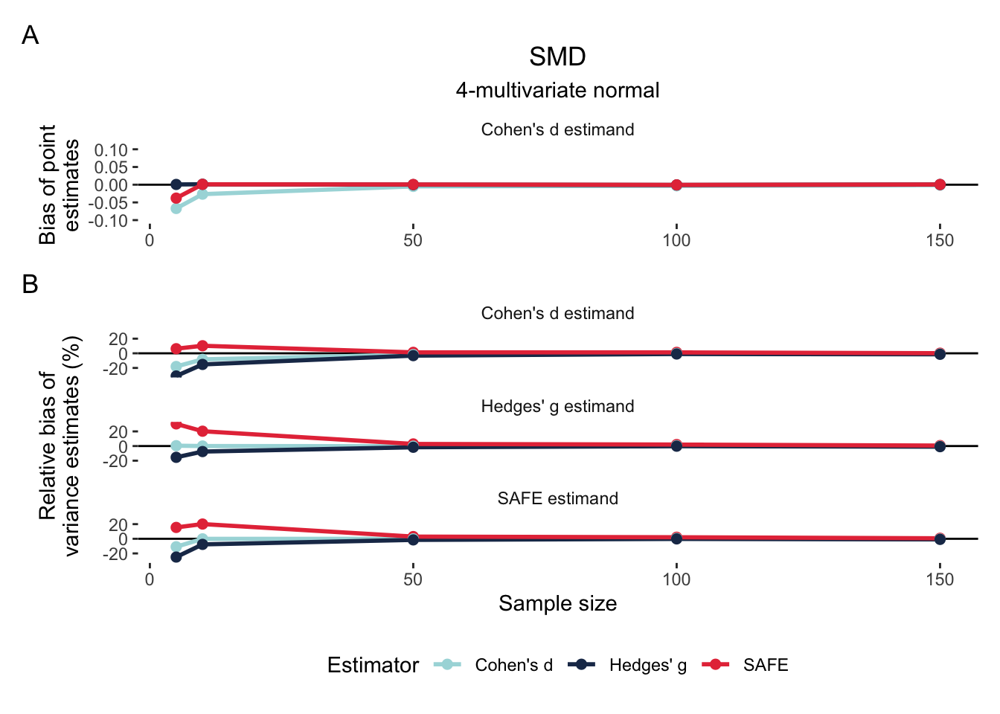
SMD 2 multivariate normal and 2-Wishart
With this estimator, the SAFE calculation used the normal distribution to simulate the two means but the Wishart distribution to estimate the SD.

lnCVR 4 multivariate normal
The SAFE estimator for this effect size was calculated with 4 multivariate normal distributions for both mean and SD.
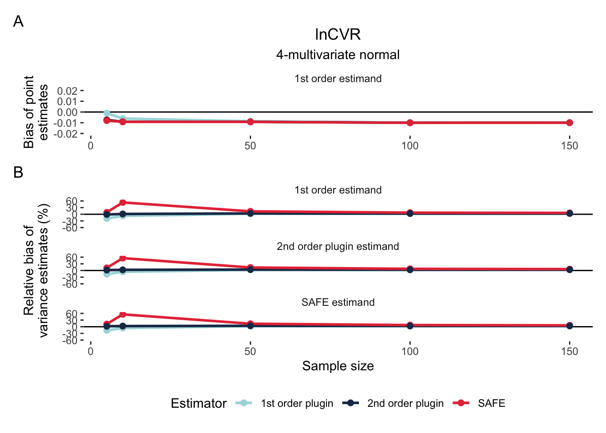
lnCVR 2 multivariate normal and 2-Wishart
The SAFE estimator for this effect size was calculated with 2 multivariate normal distributions for the means and 2 Wishart distributions for the SD.
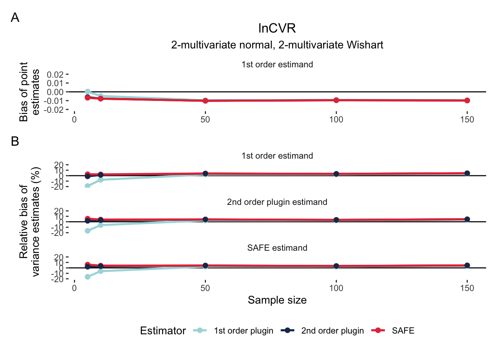
Log Odds Ratio (lnOR)
In this effect size estimation, the SAFE calculation used a binomial distribution to draw random binomial samples for ‘a’ and ‘c’.
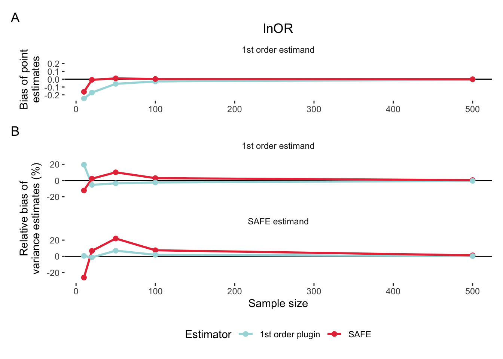
Log Risk Ratio (lnRR)
In this effect size estimation, the SAFE calculation drew ‘a’ and ‘c’ from a binomial distribution.
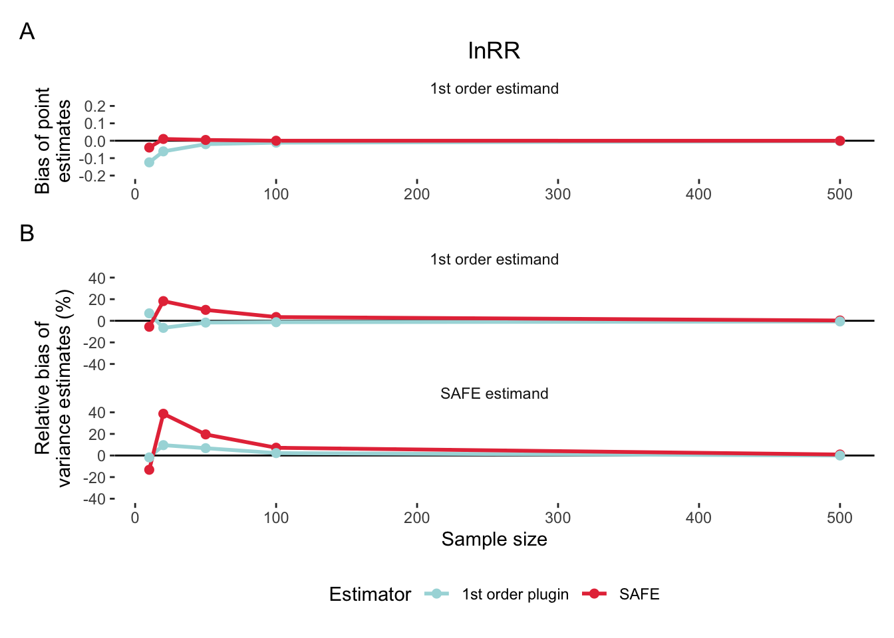
Hardy Weinberg Disequilibrium
In this effect size estimation, the SAFE calculation drew ‘n_AA’, ‘n_Aa’, and ‘n_aa’ from a binomial distribution.
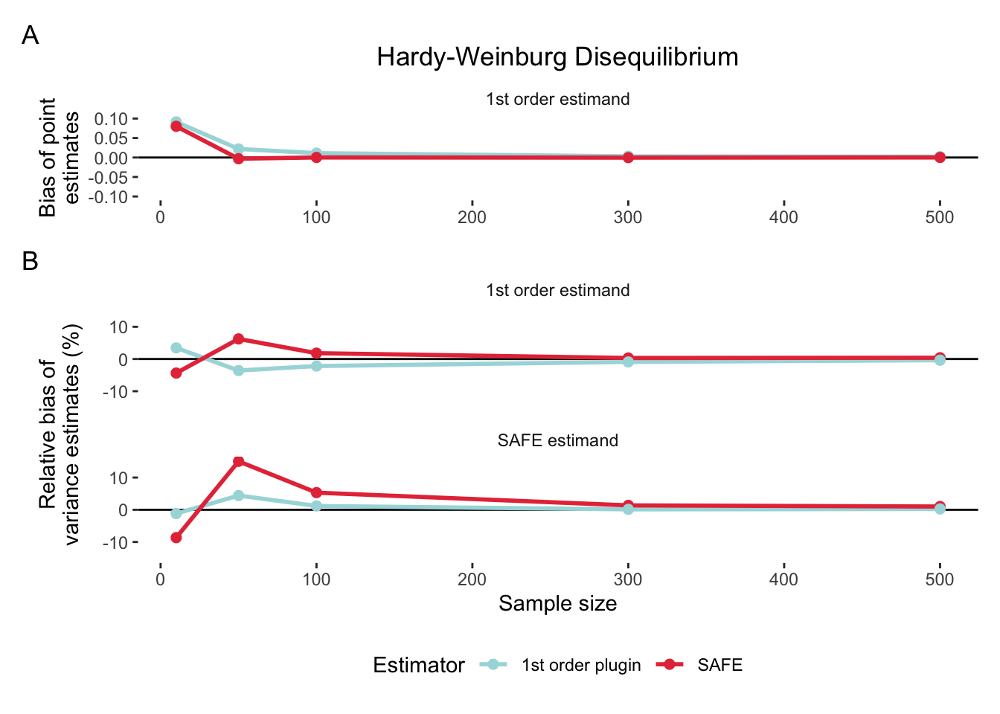
How many SAFE bootstraps?
The SAFE method relies on bootstrapping to calculate effect size point estimates and sampling variance. It’s sort of magical how well it works! But, how many bootstraps are necessary? Let’s find out by doing another Monte Carlo simulation, this time of lnRoM—the log-transformed ratio of means, which is one of the most widely used effect sizes in ecology. This time, instead of calculating bias, we’ll look at the standard deviation of the point and sampling variance estimates as we change the number of bootstraps.
However, before we go any further, we’ll load a function (eff_size) we wrote to calculate effect sizes both with plug-in estimators and with SAFE. This function can be sourced into the local environment. Let’s load the function and then calculate effect sizes, with SAFE, for several examples from the main text. The function is located in the github repo at scripts/SAFE_function.R.
Load functions
This function returns a data.table (basically a fast data.frame) with columns for plug-in effect sizes and sampling variances (denoted with _first or _second based on derivative order) and SAFE effect sizes and sampling variances (denoted with _safe). Point estimates (effect sizes) are denoted with yi_ while sampling variances are denoted with vi_.
Here, we’ll demonstrate with the effect size ‘lnRoM’, or log-transformed ratio of means, which is a commonly used effect size to compare control and experimental groups.
source("scripts/SAFE_function.R")
# Set seed for reproducibility
set.seed(2025)
# For a single effect size and sampling variance:
eff_size(x1 = 14.5, x2 = 7.9,
sd1 = 1.3, sd2 = 2,
n1 = 20, n2 = 20,
effect_type = "lnRoM",
SAFE = TRUE,
verbose = TRUE,
SAFE_boots = 1e6)lnRoM cannot accept x1 or x2 ≤ 0. Leaving it to user's discretion to check prior to execution. Negative values will be returned as NA.
Using the formulas:
yi_first <- log(x1 / x2)
yi_second <- log(x1 / x2) + 0.5 * (sd1^2/(n1 * x1^2) - sd2^2/(n2 * x2^2))
vi_first <- sd1^2 / (n1 * x1^2) + sd2^2 / (n2 * x2^2)
vi_second <- sd1^2 / (n1 * x1^2) + sd2^2 / (n2 * x2^2) + 0.5 * ( (sd1^4 / (n1^2 * x1^4)) + (sd2^4 / (n2^2 * x2^4)))
Be sure that all variables in formula are correctly named.
SAFE: 1 / 1
Running SAFE with 1e+06 bootstraps yi_first yi_second vi_first vi_second yi_safe vi_safe SE_safe
<num> <num> <num> <num> <num> <num> <num>
1: 0.6072859 0.6058845 0.003606517 0.003611733 0.6059332 0.003626491 0.06022035The function also works with a vector of raw data:
eff_size(x1 = c(14.5, 13, 15.8),
x2 = c(7.9, 21, 18.4),
sd1 = c(1.3, 2, 1.9),
sd2 = c(2, 3.1, 1.4),
n1 = c(20, 20, 20),
n2 = c(20, 15, 18),
effect_type = "SMD",
SAFE = TRUE,
verbose = FALSE,
parallelize = TRUE,
SAFE_boots = 1e6) yi_first yi_second vi_first vi_second yi_safe vi_safe SE_safe
<num> <num> <num> <num> <num> <num> <num>
1: 3.912937 3.835196 0.3014615 0.2975274 3.820708 0.3647401 0.6039372
2: -3.167230 -3.094698 0.2686568 0.2633745 -3.409212 0.2531271 0.5031174
3: -1.545312 -1.512893 0.1387221 0.1343396 -1.540630 0.1404816 0.3748087For a full list of options that eff_size can calculate, run:
eff_size()
Must specify an effect size type ('effect_type') and necessary variables (named in arguments to function call) to match formula equations.
Returning effect size names & required variables for reference. name vars_required
<char> <char>
1: SMD x1, x2, sd1, sd2, n1, n2
2: SMD_paired x1, x2, sd1, sd2, r, n1, n2
3: lnCVR x1, x2, sd1, sd2, n1, n2
4: lnCVR_paired x1, x2, sd1, sd2, r, n1, n2
5: lnHWE_A n_AA, n_Aa, n_aa
6: lnM x1, x2, sd1, sd2, n1, n2
7: lnM_paired x1, x2, sd1, sd2, n1, n2, r
8: lnOR a, b, c, d
9: lnRR a, c, n1, n2
10: lnRoM x1, x2, sd1, sd2, n1, n2
11: lnRoM_paired x1, x2, sd1, sd2, r, n1, n2
12: reciprocal n, x, sdTo store results simply assign the output to an object in R. You will then be able to access the results as a data.table.
eff_size() function arguments
...: Named vectors (numeric) of the variables required by the selected effect size (runeff_size()for a list of accepted effect sizes). All supplied vectors must have identical lengths. The required variable names depend oneffect_typeand must match thevars_requiredfield for that effect indata/effect_size_formulas.csv(seeeff_size()). If a paired design is requested andris not supplied, it defaults to 0.5; for non-paired designs,rdefaults to 0.effect_type: Character (scalar). Name of the effect size to compute, matching anamevalue indata/effect_size_formulas.csv(runeff_size()for accepted effect size names). If no effect size name is provided, the function returns a lookup table of available effect sizes and their required variables and exits.SAFE: Logical. IfTRUE(default), perform SAFE bias correction using parametric bootstrap draws specified bySAFE_boots. IfFALSE, only the plug-in effect(s) are returned.SAFE_boots: Integer. Number of bootstrap samples used by SAFE (10^6 by default). Larger values improve precision but increase run time. Used only whenSAFE = TRUE.parallelize: Logical. IfTRUE(default), SAFE calculations are parallelized over observations viaparallel::mclapply, usingdetectCores() - 1workers. Set toFALSEto run SAFE serially. Note:mclapplyuses forking (Unix/macOS); on Windows this may fall back to single-core behavior.verbose: Logical. IfTRUE(default), prints the selected formulas, special warnings attached to the effect type (e.g., handling of zeros or negatives), and SAFE progress messages.SAFE_distribution: Character orNULL.Simulation family to use for SAFE. Must match asim_familyvalue in the formulas table. IfNULLand the choseneffect_typehas a default simulation family (default_safe_family == "yes"), that default is used. If no default is defined, the function does not alter the filtered formulas.sigma_matrix: List orNULL.Optional list of per-observation variance–covariance matrices used by SAFE (length equal to the number of rows implied by...). Each element should be a symmetric, positive definite matrix conformable with the simulated parameter vector required by the chosen effect formula. IfNULL, internal defaults are used.
SAFE bootstrap length
We’ll use this function to evaluate two bootstrap lengths: 100 and 1,000.
We’ll run a Monte Carlo simulation 1,000 times just to make this easy. (See below for full 1e5 simulation results)
# Create some scenarios based on combinations of sample size and boot-length
scenario <- CJ(true_mean1 = 13.4, true_sd1 = 4.6,
true_mean2 = 16.1, true_sd2 = 3.9,
sample_size1 = c(5, 10, 150))
scenario[, sample_size2 := sample_size1]
scenarioKey: <true_mean1, true_sd1, true_mean2, true_sd2, sample_size1>
true_mean1 true_sd1 true_mean2 true_sd2 sample_size1 sample_size2
<num> <num> <num> <num> <num> <num>
1: 13.4 4.6 16.1 3.9 5 5
2: 13.4 4.6 16.1 3.9 10 10
3: 13.4 4.6 16.1 3.9 150 150Now let’s run this in a foreach loop. If you’d rather not run this on your machine, if run == FALSE, the code will just load the already finished simulation. Note that in this simulation, we’re evaluating SAFE estimates using only the ‘true’ values, instead of simulated data.
out <- list()
sub_scenario <- c()
N <- 1000
res <- list()
clust_out <- prepare_cluster(n = N)
res <- foreach(i = 1:N,
.options.snow = clust_out$options,
.errorhandling = "stop",
.packages = c("data.table", "MASS",
"crayon", "tmvtnorm")) %dopar% {
# Now calculate SAFE with 100 bootstraps
out[[1]] <- eff_size(x1 = scenario$true_mean1,
x2 = scenario$true_mean2,
sd1 = scenario$true_sd1,
sd2 = scenario$true_sd2,
n1 = scenario$sample_size1,
n2 = scenario$sample_size2,
effect_type = "lnRoM",
SAFE = TRUE,
verbose = FALSE,
parallelize = FALSE,
SAFE_boots = 100)
out[[1]] <- data.table(out[[1]],
sample_size = scenario$sample_size1,
boots = 100)
out[[1]]
# Now with 1000 bootstraps
out[[2]] <- eff_size(x1 = scenario$true_mean1,
x2 = scenario$true_mean2,
sd1 = scenario$true_sd1,
sd2 = scenario$true_sd2,
n1 = scenario$sample_size1,
n2 = scenario$sample_size2,
effect_type = "lnRoM",
SAFE = TRUE,
verbose = FALSE,
parallelize = FALSE,
SAFE_boots = 1000)
out[[2]] <- data.table(out[[2]],
sample_size = scenario$sample_size1,
boots = 1000)
out[[2]]
return(rbindlist(out))
}
stopCluster(clust_out$clust)
res.dt <- rbindlist(res)
saveRDS(res.dt, "builds/dummy_bootstrap_simulation.Rds")Let’s look at the dispersion of the SAFE estimates as a function of sample size and bootstrap length.
head(res.dt) yi_first yi_second vi_first vi_second yi_safe vi_safe
<num> <num> <num> <num> <num> <num>
1: -0.1835646 -0.1776480 0.035304382 0.035650987 -0.1650154 0.035516549
2: -0.1835646 -0.1806063 0.017652191 0.017738842 -0.1807932 0.014147118
3: -0.1835646 -0.1833673 0.001176813 0.001177198 -0.1823932 0.001335037
4: -0.1835646 -0.1776480 0.035304382 0.035650987 -0.1771216 0.033641955
5: -0.1835646 -0.1806063 0.017652191 0.017738842 -0.1819732 0.017039825
6: -0.1835646 -0.1833673 0.001176813 0.001177198 -0.1827143 0.001237149
SE_safe sample_size boots
<num> <num> <num>
1: 0.18845835 5 100
2: 0.11894166 10 100
3: 0.03653816 150 100
4: 0.18341743 5 1000
5: 0.13053668 10 1000
6: 0.03517312 150 1000# First, the point estimates:
ggplot(data = res.dt,
aes(x = as.factor(sample_size), y = yi_safe,
fill = boots,
group = interaction(sample_size, boots)))+
geom_jitter(alpha = .5, shape = 21,
position = position_jitterdodge(dodge.width = 1))+
geom_violin(position = position_dodge(width = 1))+
ylab("SAFE Point Estimate")+
xlab("Scenario sample size")+
scale_fill_scico("Number of SAFE bootstraps",
palette = "hawaii")+
theme_bw()+
theme(panel.border = element_blank(),
panel.grid = element_blank(),
strip.background = element_blank(),
legend.position = "bottom")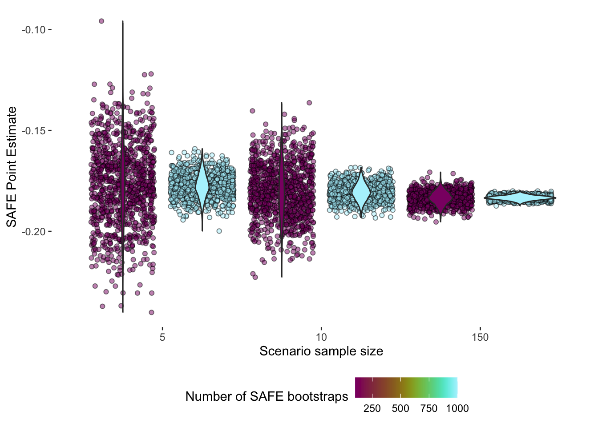
Now let’s look at the sampling variance estimates:
ggplot(data = res.dt,
aes(x = as.factor(sample_size), y = vi_safe,
fill = boots,
group = interaction(sample_size, boots)))+
geom_jitter(alpha = .5, shape = 21,
position = position_jitterdodge(dodge.width = 1))+
geom_violin(position = position_dodge(width = 1))+
ylab("SAFE Variance Estimate")+
xlab("Scenario sample size")+
scale_fill_scico("Number of SAFE bootstraps",
palette = "hawaii")+
theme_bw()+
theme(panel.border = element_blank(),
panel.grid = element_blank(),
strip.background = element_blank(),
legend.position = "bottom")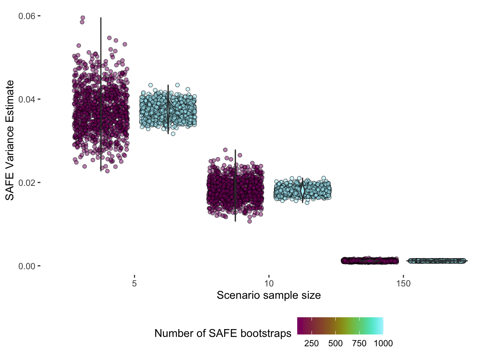
It looks like the dispersion in estimates is shaped by number of SAFE bootstraps and improves considerably with 1,000 bootstraps, especially at low sample sizes. Another way to visualize this (which we’ll use below in the proper 1e5 simulations) is to plot the standard deviation.
res.summary <- res.dt[, .(sd_point_estimate = sd(yi_safe),
sd_variance_estimate = sd(vi_safe)),
by = .(sample_size, boots)]
res.summary sample_size boots sd_point_estimate sd_variance_estimate
<num> <num> <num> <num>
1: 5 100 0.020121458 5.480685e-03
2: 10 100 0.013661173 2.603266e-03
3: 150 100 0.003381441 1.651428e-04
4: 5 1000 0.005940034 1.862273e-03
5: 10 1000 0.004276895 8.471993e-04
6: 150 1000 0.001107589 5.273536e-05# Let's melt this to make a single plot:
res.summary.mlt <- melt(res.summary,
id.vars = c("sample_size", "boots"))
res.summary.mlt sample_size boots variable value
<num> <num> <fctr> <num>
1: 5 100 sd_point_estimate 2.012146e-02
2: 10 100 sd_point_estimate 1.366117e-02
3: 150 100 sd_point_estimate 3.381441e-03
4: 5 1000 sd_point_estimate 5.940034e-03
5: 10 1000 sd_point_estimate 4.276895e-03
6: 150 1000 sd_point_estimate 1.107589e-03
7: 5 100 sd_variance_estimate 5.480685e-03
8: 10 100 sd_variance_estimate 2.603266e-03
9: 150 100 sd_variance_estimate 1.651428e-04
10: 5 1000 sd_variance_estimate 1.862273e-03
11: 10 1000 sd_variance_estimate 8.471993e-04
12: 150 1000 sd_variance_estimate 5.273536e-05setorder(res.summary.mlt, boots)
ggplot(data = res.summary.mlt,
aes(x = boots, y = value, color = sample_size,
group = interaction(sample_size)))+
geom_path()+
geom_point(size = pt_size)+
facet_wrap(~variable,
scales = "free_y",
labeller = as_labeller(c("sd_point_estimate" = "Point estimate",
"sd_variance_estimate" = "Variance estimate")))+
scale_color_scico("Scenario sample size",
palette = "hawaii")+
xlab("SAFE bootstrap length")+
ylab("Standard deviation of estimate")+
theme_bw()+
theme(panel.border = element_blank(),
panel.grid = element_blank(),
strip.background = element_blank(),
legend.position = "bottom")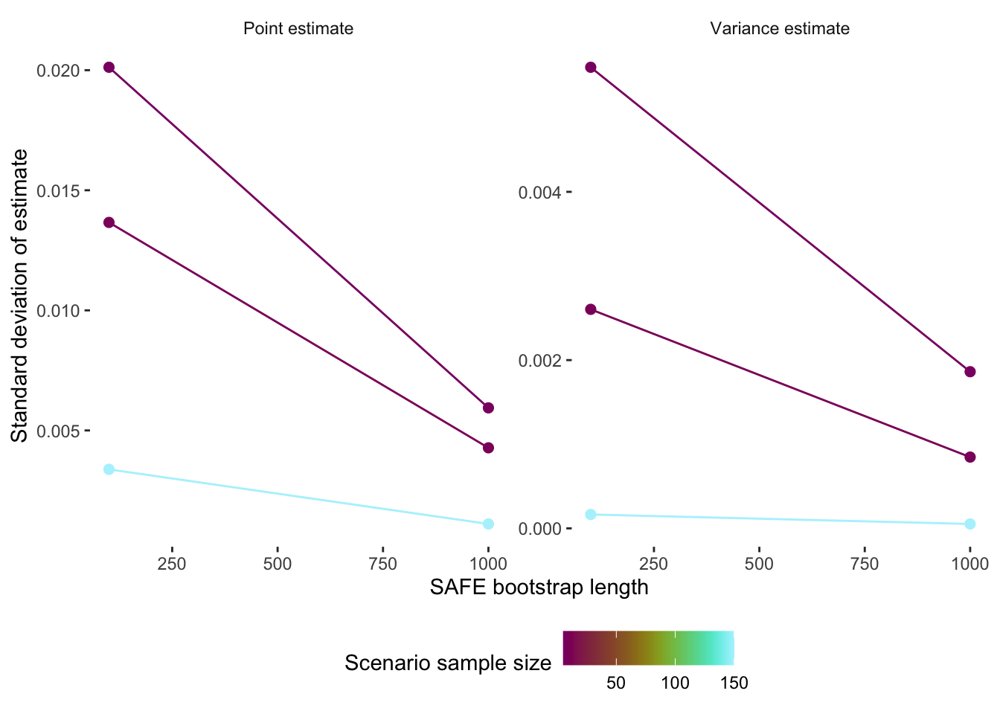
Bootstrap scenario results
Now let’s look at the full Monte Carlo simulation results for the influence of bootstrap length.
sim_results <- readRDS("builds/all_scenarios_summarized.Rds")
sim_results <- sim_results[calculation == "SD", ]Speed
Once again, here’s our novel effect size ‘speed’, 1 / x. How do our SAFE estimates of speed and its sampling variance change as we changed the number of bootstraps?
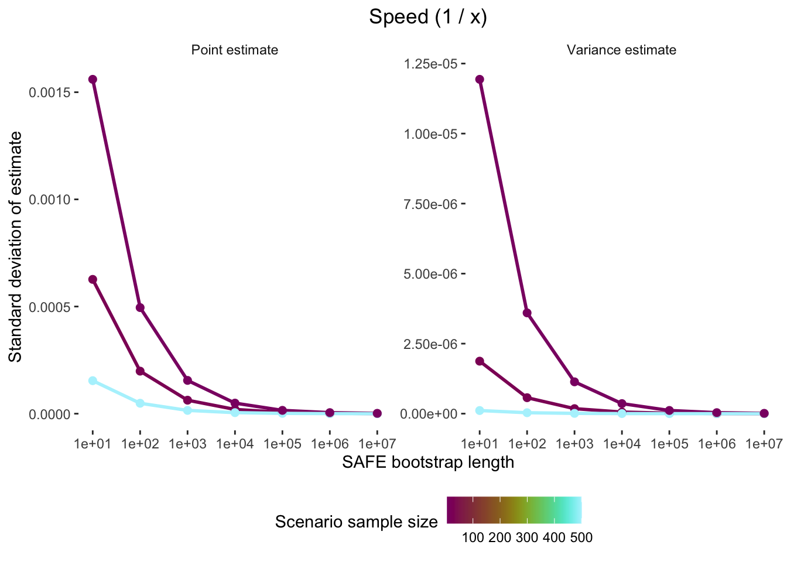
SMD 4-multivariate normal
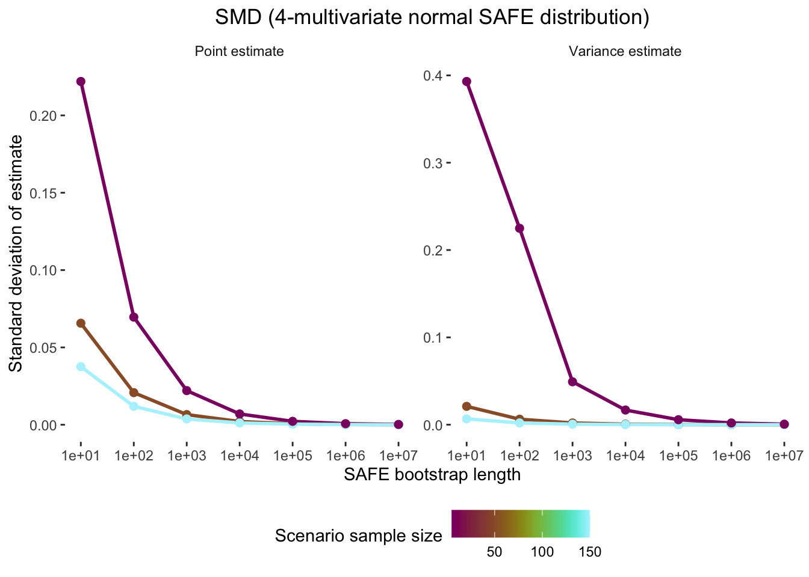
SMD 2-multivariate normal and 2-Wishart
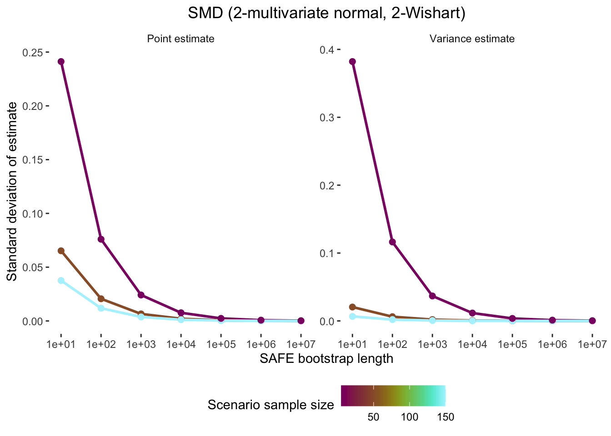
lnCVR 4-multivariate normal

lnCVR 2-multivariate normal and 2-Wishart

Log Odds Ratio (lnOR)

Log Risk Ratio (lnRR)

Hardy Weinberg Disequilibrium

Conclusion
SAFE bootstrapping is a remarkably simple and effective way to calculate bias-corrected point estimates and sampling variances for meta-analyses. Based on our simulations, this method performs similarly to plugin estimates and requires only 1e5 (though 1e6 is marginally better) bootstraps. SAFE allows researchers to calculate sampling variance for custom effect sizes with only minimal statistical knowledge (and without spooky Calculus).
References
Havird, Justin C, Jennifer L Neuwald, Alisha A Shah, Alexander Mauro, Craig A Marshall, and Cameron K Ghalambor. 2020. “Distinguishing Between Active Plasticity Due to Thermal Acclimation and Passive Plasticity Due to Q10 Effects: Why Methodology Matters.” Functional Ecology 34 (5): 1015–28.